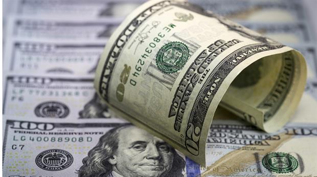

El dólar volvió a subir y superó el máximo histórico
Para la venta al público cerró a $ 16,10 y marcó un nuevo récord

El dólar confirmó ayer su tendencia al rebote en la plaza local al aumentar 1,4% en la jornada y cerrar noviembre en un nuevo máximo histórico minorista de $ 16,10.
Así se posicionó como la mejor inversión del mes, al entregar un retorno promedio del 4,8%, que duplicó el de la Lebac (2,2%) y casi triplicó el 1,7% que rindió el plazo fijo minorista en pesos.
El salto de ayer, que fue de 19 a 22 centavos (según el precio mayorista o al público), confirma el reacomodamiento que venía ensayando el billete, que tendió a acelerarse en las últimas jornadas tras la repetida baja de tasas y conocerse una batería de datos que confirman que la economía, lejos de escaparle a la recesión, se halla empantanada en ella.
Ese recorte en el premio (del 24,75 al 26,75% anual) que se concedía a los apostadores al peso y el deslizamiento que comenzó a ensayar el billete disparó el desarme de las carteras armadas apostando a un dólar estable, y desequilibró el mercado hacia la demanda.
La mayoría de los analistas juzga esta suba como saludable, en términos macroeconómicos, y circunstancial. "La suba está asociada al efecto Trump y a un BCRA que mueve la tasa a contramano de la de 10 años. Pero no lo vemos subiendo mucho más. Incluso hasta ahora mantenemos la previsión de cierre del año en el rango que va de 15,50 a 16 pesos", explicó a LA NACION Lorenzo Sigaut Gravina, de Ecolatina.
Su colega Federico Furiase, del Estudio Bein, coincide en asignar a "la baja de tasas y la inyección de pesos" el salto del billete. "De algún modo, el Gobierno incentivó la dolarización de carteras en un mundo que espera a esa divisa algo más fuerte". Pero también cree que el ajuste será limitado en tanto la "volatilidad global empieza a ceder", y porque el BCRA mantiene la potestad de darle una señal de precio al mercado, "lo que hará si nota que la escalada pone en riesgo su meta inflacionaria. Eso, cuando aún la tasa real es positiva, ayudará a un nuevo equilibrio de mercado".